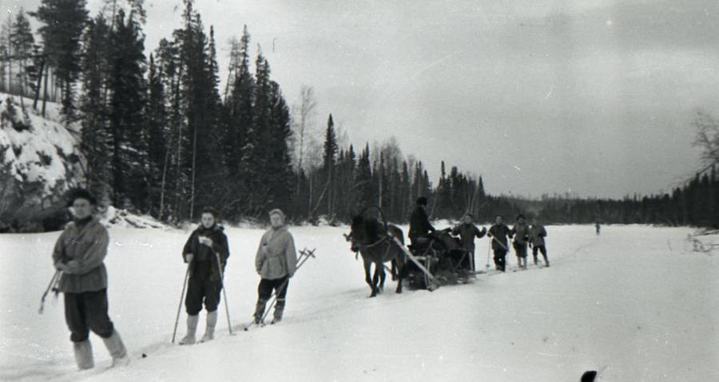
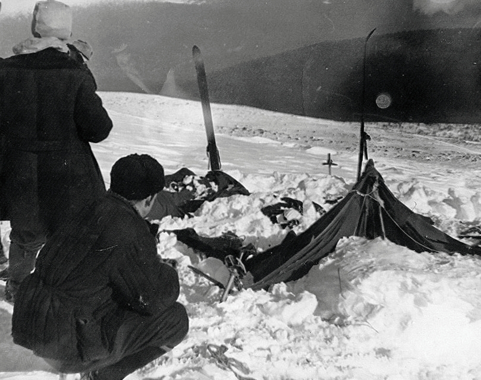
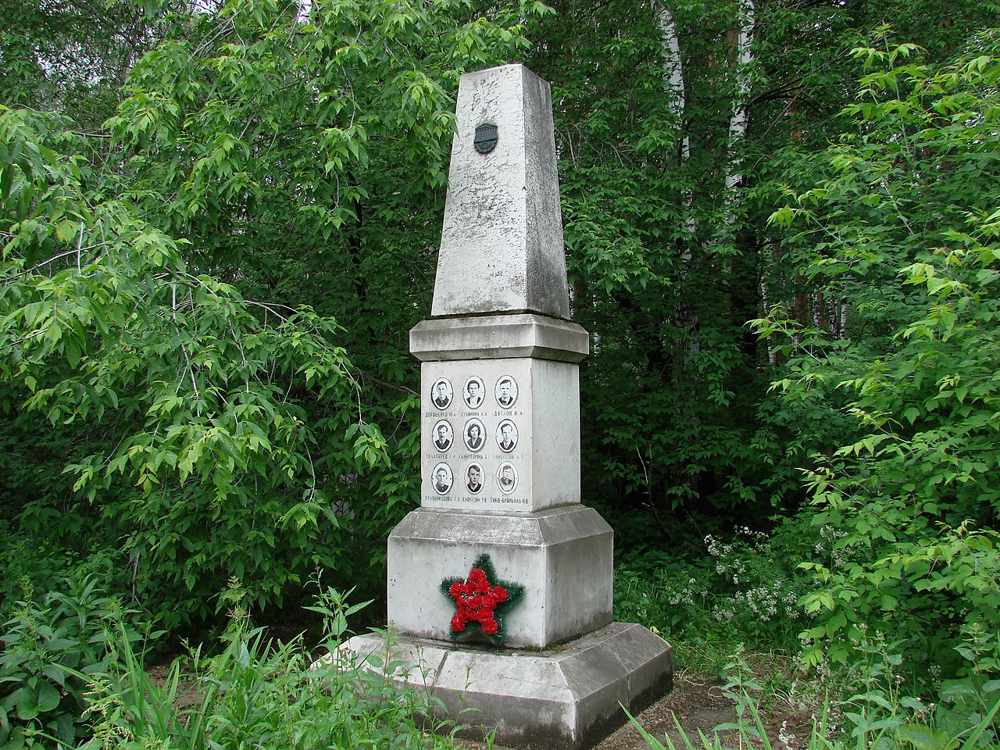
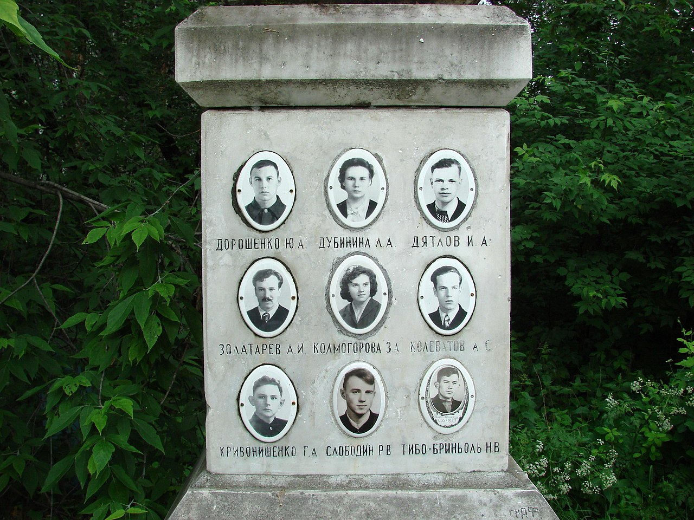

The Dyatlov Students hiking toward the Orten mountain
Background Information
The group of ten skiers, led by a 23 year old radio-engineering
student Igor Dyatlov, was formed in 1959 for an expedition
in the northern Urals of the Soviet Union. Most of the skiers
were students in the Ural Polytechnical Institute, as was
Dyatlov. They were all Grade-II hikers, expecting to recieve
Grade III certification, the highest in the Soviet Union
at the time, upon their return. They were heading for the mountain
Gora Orten; the hike was considered to be Category III, or
most difficult.
The Expedition
The group took a truck from Ivdel to Vizhai, the last
inhabited village in the Northern Province, on the 25th
of January, 1959; there, they replenished themselves for
the journey. On the 27th, they began to make their way towards
Orten. A day after, Yuri Yudin, one of the members who had
rheumatism and a congenital heart defect, felt knee and joint
pain, and decided to turn back. The remaining nine hiked on.
From their diaries and cameras, it seems that they arrived
at the highland area and started preparing for the climb on
January 31st. They cached the surplus food for the return trip
in a wooded valley. They started to move through the pass on
February 1st, but lost their direction and deviated west, as a
result of snowstorms and decreased visibility. They realized
their mistake and decided to set up camp for the night on
the slope, choosing not to move downhill with better shelter.
Later, Yudin would postulate that Dyatlov likely did not want to
lose the altitude they had gained, or perhaps he wanted to practice
camping on a mountain slope.
The Incident
Dyatlov had initially agreed to send a telegram to their
sports club as soon as the group returned to Vizhai, which was
supposed to be no later than the 12th. Before Yudin left, Dyatlov
told him that he expected it to take longer. So when the 12th
passed, there were no immediate reaction. However, by the 20th,
the relatives of the hikers demanded a rescue operation. The first
rescue group, consisting of volunteer students and teachers, were
sent out. Later, the military and the police became involved, with
planes and helicopters being used for the search.
Here's where it gets interesting. On the 26th, the search
group found the hikers' abandoned tents on the mountain slope.
The campsite baffled them. It was empty, badly damaged, and the
students' belongings were left behind. The investigators noticed
that the tents were cut open from the inside. Sets of footprints,
of people wearing a single shoe, only socks, or even barefoot, led
to the nearby woods. However, these tracks were covered in snow after
about 500 meters.

Investigators found the tents cut open from
the inside. Most of the skiers fled without their clothes.
At the edge of the woods, there was visible remains of a small
fire, along with two bodies under a large siberian pine.
Krivonischenko and Doroshenko, two of the hikers, lay there shoeless
and only in their undergarments. Tree branches were broken up to
five meters high, meaning someone had tried to climb it.
Between the pine and the campsite, there were three more corpses:
Dyatlov, Kolmogorova and Slobodin. The poses of their bodies suggested
that they were trying to return to the camp. They were found a couple of
hundred meters away from each other.
After about two more months of searching, the remaining four travellers
were found under 13 feet of snow in a ravine further into the woods. They
were better dressed, and it seems that they were wearing clothes from the
other hikers. Signs suggested that those who died first had their clothes
relinquished to these other four.
Examination
Though an initial medical examination concluded that they all
died from hypothermia, subsequent examinations of the bodies
shifted the narrative. Thibeaux-Brignolles had major skull damage.
Both Dubinina and Zolotaryov had major chest fractures. Forensic
expert Boris Vozrozhdenny stated that the force required to cause
such damage would be comparable to a car crash. However, the bodies
had no external wounds for the bone fractures, almost as if they
had been subjected to extremely high levels of pressure.
The four bodies found in the ravine also had soft tissue damage.
Dubinina was missing her tongue, eyes, parts of the lips, as well
as some facial tissues. Zolotaryov had his eyeballs missing, and
Aleksander Kolevatov his eyebrows. However, Vozrozhdenny believed that
these soft-tissue injuries occured after their death due to their
location in a stream.
At first, it was thought that the local Mansi people had murdered
the hikers for enroaching on their territories, but the forensic
investigator did not believe that the injuries could have been caused
by another human being, because the force was too strong.
The verdict at the time was that the hikers had died from a compelling
natural force.


Tomb of the deceased in Mikhailovskoe Cemetery in
Yekaterinburg, Russia, with their pictures on it
Possible explanations
Avalanche
Benjamin Radford suggests that there was an avalanche. He suggests
that they group woke up in a panic because they believed that an avalanche
was coming or that it had covered their entrance. They cut their way out,
poorly dressed because they were sleeping. They probably ran to the nearby
woods for safety, and when they believed the danger had passed, they tried
to head back. But they were lost in the dark and froze to death. The four bodies
found in the river were likely hit by the avalanche, which would explain the
fractures.
This is debated, because there were no signs of an avalanche when the
rescue team got there. An avalanche would have affected the tree line and would
have swept all the bodies away as well. The snow in the area was rather shallow
too. Over a 100 expeditions have taken place here after this incident, and none
have reported conditions for an avalanche. Both Dyatlov and Zolotaryov were
master hikers, and they would not have camped in the path of an avalanche.
Footprints leading away from the campsite, do not resemble nine people running
away in panic; they resemble people walking at a normal pace.
Katabatic Winds
Sweedish researchers suggest that it was Katabatic winds which were
responsible for the incident. The explanation goes: the hikers woke up under
immense Katabatic winds. Decided to cover their camps in snow and head to
the woods for shelter. They built temporary camps to stay in, one of which
collapsed and killed four of them. The others possibly froze to death as they
tried to make their way back.
Other explanations
There are many other explanations, such as secret military experiments,
infrasound, and paradoxical undressing. But, as of now, the official explanation
is that of an avalanche, supported by a repeated investigation in 2015.
Here's a video from YouTube examining the incident: